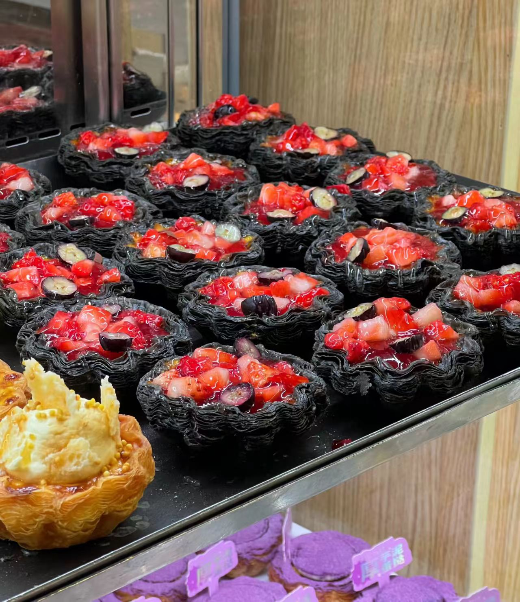

这里不仅有农大的专属美食，还有美丽的校园文化与校外美食及娱乐。 这份专属生活手册，送给每一位在路上的农大学子。

公一面包坊的蛋挞简直让人眼花缭乱，感觉每天都在出新口味，是早八人最治愈的开启方式，但价格略贵。
冬暖夏凉，资源丰富。座椅舒适，氛围良好，找到一个靠窗的位置，阳光洒在书页上，学习动力更足。
逛街、美食、看电影一应俱全，最近全新升级的物美超市可以买到很多小吃零食，商场里还有很多美食，个人非常推荐商场一层的沙胆彪牛肉火锅。总而言之，是周末放松解压的最佳去处。